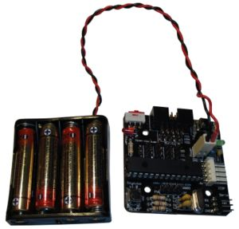
Contenido
[ocultar]- 1 Introducción
- 2 Montaje
- 2.1 Paso 1: trenzar los cables
- 2.2 Paso 2: Insertar el termoretráctil
- 2.3 Paso 3: Estañear los cables
- 2.4 Paso 4: Estañear los pines macho del conector molex
- 2.5 Paso 5: Soldar los pines a los cables
- 2.6 Paso 6: Aplicar calor al termoretráctil
- 2.7 Paso 7: Insertar los cables en el conector molex
- 2.8 Paso 8: Poner 4 pilas AAA
- 3 Pruebas
- 4 Fotos
- 5 Enlaces
- 6 Noticias
Introducción
Para alimentar la tarjeta Skycube usamos un portapilas plano, de 4 pilas AAA, que se conecta bien al conector superior o inferior de la tarjeta, mediante un conector molex de dos pines. En esta documentación se describe cómo montar correctamente el portapilas.
El material de partida es:
- Un portapilas plano, de 4 pilas AAA
- Un conector molex hembra, de 2 pines
- Dos pines macho para conectores molex
- Dos trozos de tubo termoretráctil de 2mm de diámetro y 10mm de largo
| 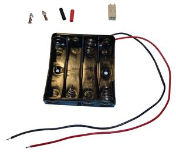 Inicio. Portapilas antes del montaje |
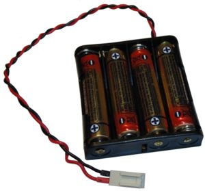 Fin. Portapilas montado y listo para usarse en la Skycube |


Montaje
Paso 1: trenzar los cables
Trenzar los cables del portapilas. Esto es opcional, sin embargo el cable trenzado es más compacto y resistente, y se puede introducir por diferentes huecos más facilmente.
| 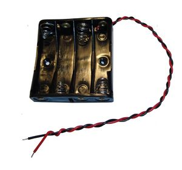 Portapilas con los cables trenzados |

Paso 2: Insertar el termoretráctil
Insertar los tubos termo-retráctiles en ambos cables, como se muestra en la figura. NO aplicar calor todavía.
| 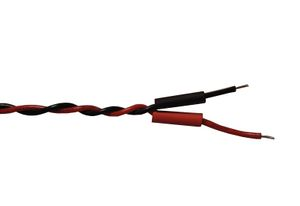 Termoretráctil introducido en los cables |

Paso 3: Estañear los cables
Utilizando el soldador, aplicar un poco de estaño en los extremos de los cables. Así será más fácil soldarlos a los pines del conector molex
| 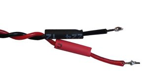 Cables estañeados |

Paso 4: Estañear los pines macho del conector molex
Estañear los pines del conector molex. No hace falta echar mucho estaño. Con colocar un poco en la base es suficiente.
| 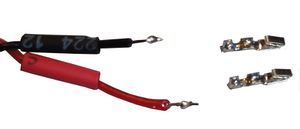 Pines estañeados |

Paso 5: Soldar los pines a los cables
Soldar los pines a los cables. Utilizar unos alicates de cabeza plana para sujetar el pin. Acercar el cable estañeado al pin y aplicar calor con el soldador. Como tanto el cable como el pin están estañeados, su unión se hará muy rápidamente.
| 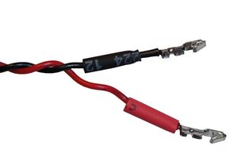 Cables con los pines macho del conector molex soldados |

Paso 6: Aplicar calor al termoretráctil
Colocar los tubos termo-retráctiles de manera que cubran la mitad inferior de cada pin. Usando la parte ancha del soldador, aplicar calor. El termo-retráctil, además de prevenir cortocircuitos, le da más consistencia a la unión y evita que se rompa.
| 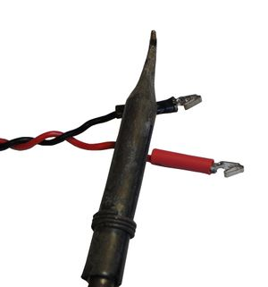 Aplicando calor al termoretráctil |

Paso 7: Insertar los cables en el conector molex
Insertar los pines macho en el conector molex hembra. ¡¡¡ATENCIÓN A LA POLARIDAD!!!. El cable rojo se debe introducir en el pin 1 del molex. Para insertarlos puede ser necesario utilizar unos alicates de cabeza plana. Si el pin macho no entrase bien, usar estos alicates para presionar el pin, aplastando un poco las partes que no entren. Una vez que el pin entra, se oirá un pequeño 'click' y al tirar del cable ya no se podrá sacar.
| 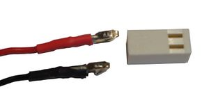 1) Posición de los cables en el conector molex. ¡Muy importante! |
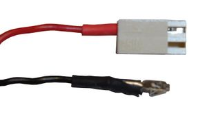 2) Insertar cable rojo en pin 1 del conector molex |
| 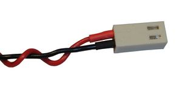 3) Conector molex colocado. ¡¡Ojo a la colocación exacta de los cables!! |
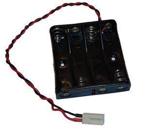 4) Portapilas finalizado (sin pilas) |


Paso 8: Poner 4 pilas AAA
Finalmente colocar las 4 pilas AAA. El portapilas está listo para ser probado.
Pruebas
- Conectar el portapilas al conector de alimentación superior de la Skycube
- Encender la skycube, mediante el interruptor. El led rojo se debe encender.
- Conectar el portapilas al conector de alimentación de la cara inferior. El led rojo también se debe encender.
| 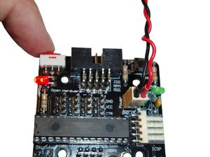 2) Encender la Skycube. El led rojo debe lucir | |
 3) Conexión del portapilas en el conector de la cara inferior de la Skycube |

Fotos
| Álbum de fotos |
Enlaces
Noticias
- 21/Enero/2010: Primera versión de esta página
- 20/Enero/2010: Comenzada esta página